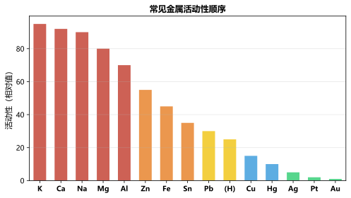

专题一：物质的变化与性质
物质变化物理变化：没有新物质生成（分子不变）。如：熔化、凝固、汽化、液化、升华、凝华、挥发、溶解、粉碎。化学变化：有新物质生成（分子改变）。如：燃烧、生锈、腐败、发酵、冶炼。伴随现象：发光放热、颜色变化、产生气体/沉淀。物理性质：不经化学变化就能表现的性质（颜色、状态、气味、密度、熔沸点、硬度、溶解性、导电导热性）。化学性质：在化学变化中才表现的性质（可燃性、稳定性、氧化性、还原性、酸性、碱性、毒性）。
专题二：空气与氧气
空气氧气空气组成：N₂78%、O₂21%、稀有气体0.94%、CO₂0.03%、其他0.03%。空气中氧气含量测定：红磷燃烧消耗O₂→水倒流入集气瓶约1/5体积。氧气的性质：无色无味气体，密度比空气大（1.293g/L），不易溶于水。化学性质活泼，支持燃烧和呼吸。氧气的制取：①加热KMnO₄(试管口放棉花) ②H₂O₂+MnO₂(常温，装置简单) ③加热KClO₃+MnO₂。氧气的工业制法：分离液态空气（物理变化）。

专题三：碳和碳的氧化物
碳及其化合物碳单质：金刚石（最硬）、石墨（最软、导电）、C₆₀。物理性质差异大是因为碳原子排列方式不同。碳的化学性质：①稳定性（常温）②可燃性：C+O₂→CO₂(充分)，2C+O₂→2CO(不充分) ③还原性：C+2CuO→2Cu+CO₂↑。CO₂：无色无味，密度比空气大（能倒入），能溶于水（汽水）。与水反应：CO₂+H₂O→H₂CO₃（使石蕊变红）。与石灰水反应：CO₂+Ca(OH)₂→CaCO₃↓+H₂O（检验方法）。CO：无色无味，有毒（与血红蛋白结合），可燃（蓝色火焰），有还原性（CO+CuO→Cu+CO₂）。
专题四：化学方程式与计算
化学计算质量守恒定律：参加化学反应的各物质的质量总和等于反应后生成的各物质的质量总和。原子种类、数目、质量不变；分子数目可能变。化学方程式的含义：①反应物和生成物 ②反应条件 ③各物质质量比=相对分子质量×系数之比。计算步骤：设未知→写方程式→标已知量→找质量关系→列比例→求解→作答。注意：代入纯净物质量，不纯物需先换算。
专题五：水与溶液
溶液水的组成：电解水正极产生O₂(1份)，负极产生H₂(2份)→水由氢氧元素组成。2H₂O→2H₂↑+O₂↑。溶液：溶质+溶剂。饱和溶液与不饱和溶液转化：加溶质/降温/蒸溶剂→饱和；加溶剂/升温→不饱和。溶解度：一定温度下100g溶剂中达到饱和时溶解的溶质质量。大多数固体溶解度随温度升高而增大（KNO₃最明显），Ca(OH)₂相反。气体溶解度随温度升高而减小、随压强增大而增大。溶质质量分数：w=m质/m液×100%。稀释公式：m₁w₁=m₂w₂。
专题六：金属与金属材料
金属金属物理性质：有光泽、导电导热性、延展性（大多数固体，汞除外）。金属化学性质：①与O₂反应（4Al+3O₂→2Al₂O₃，铁生锈）②与酸反应（Zn+H₂SO₄→ZnSO₄+H₂↑）③与盐反应（Fe+CuSO₄→FeSO₄+Cu）。金属活动性顺序：K Ca Na Mg Al | Zn Fe Sn Pb (H) | Cu Hg Ag Pt Au。排在H前的能置换酸中的H，排在前面的能置换后面的金属盐溶液。金属的防护：保持干燥、涂油、镀层、做成合金。

专题七：酸和碱
酸碱酸的通性：①使指示剂变色（石蕊→红）②与活泼金属→H₂↑ ③与碱性氧化物→盐+水 ④与碱→盐+水（中和反应）⑤与某些盐→新盐+新酸。盐酸：HCl，挥发性强，白雾。硫酸：H₂SO₄，吸水性（干燥剂），脱水性（碳化），溶于水大量放热（注酸入水）。碱的通性：①使石蕊变蓝、酚酞变红 ②与酸中和→盐+水 ③与酸性氧化物→盐+水 ④与某些盐→新盐+新碱。NaOH：俗称烧碱/火碱/苛性钠，易潮解，有强腐蚀性。Ca(OH)₂：俗称熟石灰/消石灰，微溶。
专题八：盐与化肥
盐盐的化学性质：①与金属反应（置换）②与酸反应 ③与碱反应 ④与盐反应（复分解）。复分解反应条件：生成沉淀、气体或水。常见盐：NaCl（食盐，调味防腐）、Na₂CO₃（纯碱/苏打，去油污）、NaHCO₃（小苏打，发酵粉/治疗胃酸）、CaCO₃（石灰石/大理石，建筑材料）。离子检验：Cl⁻→AgNO₃+HNO₃（白色AgCl），SO₄²⁻→BaCl₂+HNO₃（白色BaSO₄），CO₃²⁻→HCl（产生CO₂使澄清石灰水变浑浊）。化肥：氮肥(N)、磷肥(P)、钾肥(K)、复合肥(NPK)。鉴别：看颜色、加水溶解、加熟石灰研磨（铵态氮肥产生NH₃）。
专题九：化学与能源、生活
化学与生活燃烧条件：①可燃物 ②氧气（助燃剂）③温度达到着火点。三者缺一不可。灭火原理：清除可燃物、隔绝氧气（CO₂灭火器）、降温至着火点以下。化石燃料：煤（主要含C）、石油（混合物，分馏→物理变化）、天然气（主要成分为CH₄）。新能源：氢能（热值高无污染，制取成本高）、太阳能、风能、核能。化学与健康：六大营养素（糖类、油脂、蛋白质、维生素、无机盐、水）。甲醛有毒（不能用于食品保鲜）。黄曲霉素耐高温。
专题十：实验操作与探究
实验操作基本操作：①取用（一横二送三直立、一斜二送三直立）②量取（量筒平放凹液面最低处读数）③加热（外焰加热，试管口不朝人）④检查气密性（手握试管法）⑤过滤（一贴二低三靠）⑥蒸发（玻璃棒搅拌防飞溅）。除杂原则：不增不减易分离。常见鉴别：O₂(带火星木条)、CO₂(澄清石灰水)、H₂(点燃淡蓝焰)、H₂O(无水CuSO₄白变蓝)。气体的干燥：酸性干燥剂（浓H₂SO₄→干燥酸性/中性气体），碱性干燥剂（碱石灰/NaOH→干燥碱性/中性气体）。尾气处理：点燃、吸收、收集。